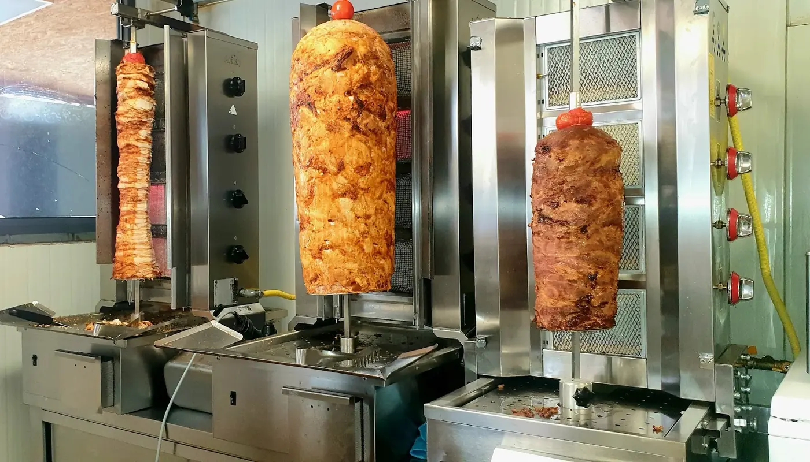
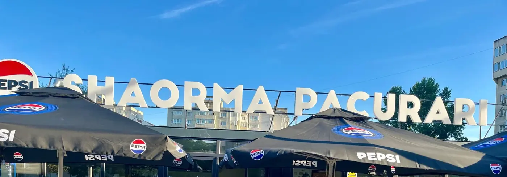
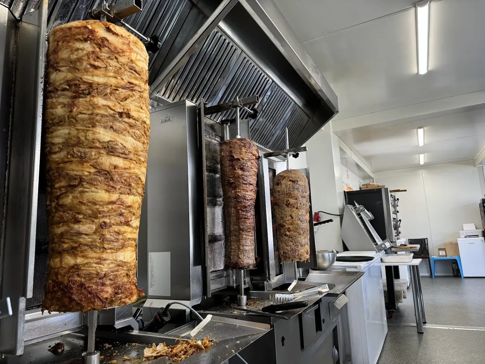
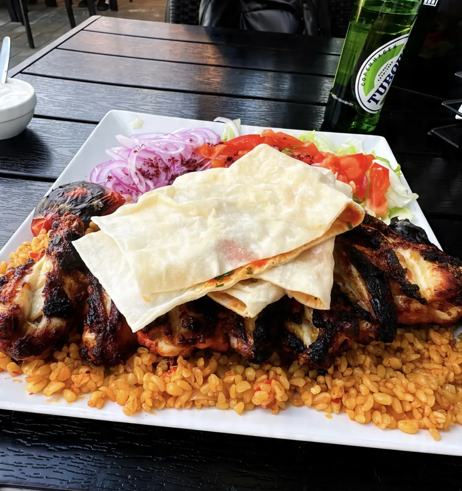
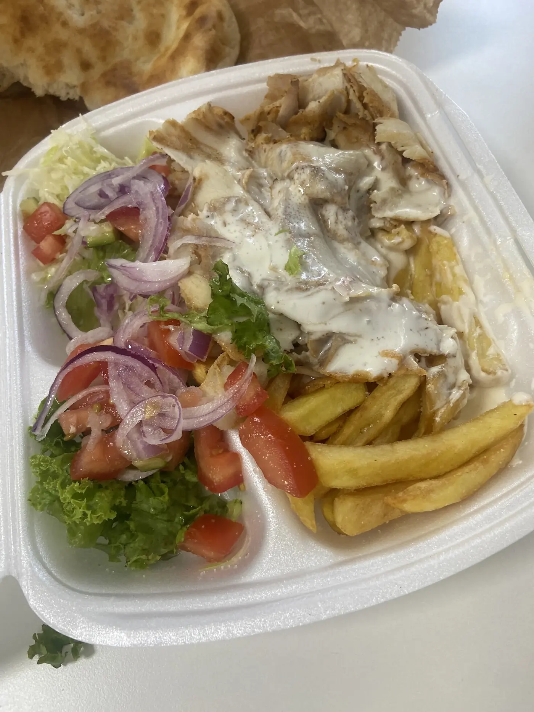
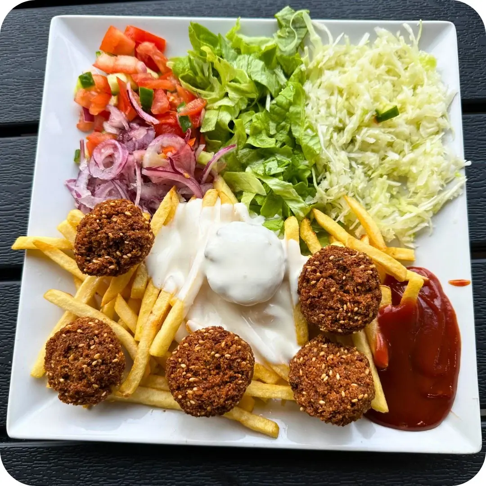
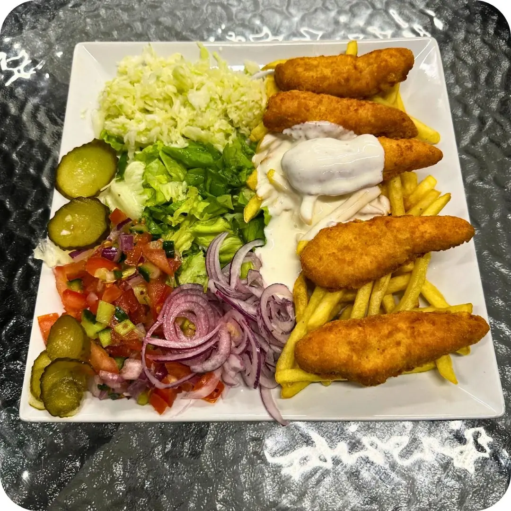
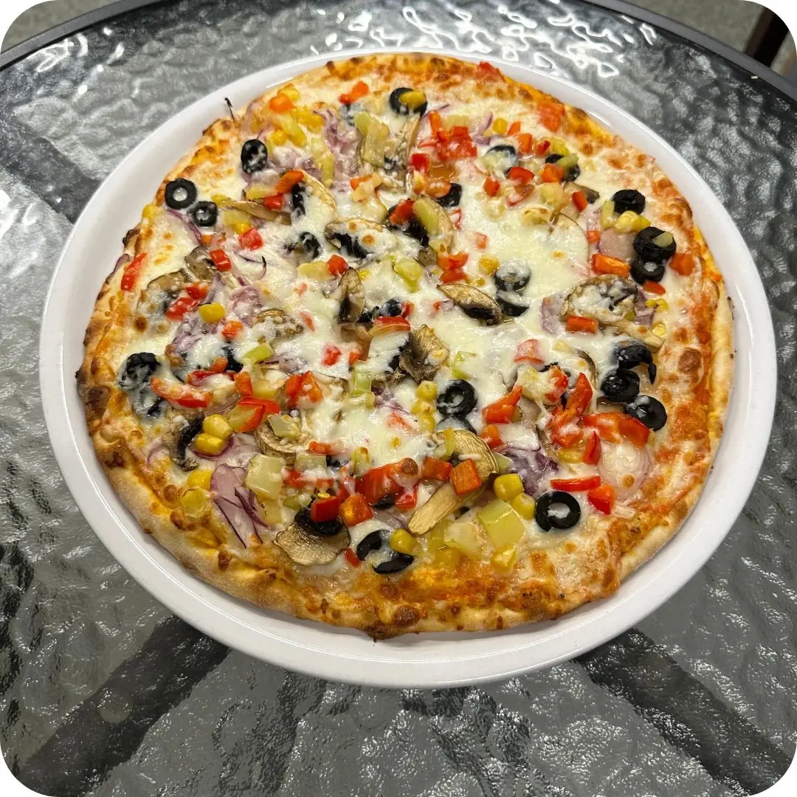

{{Clienții spun că atât shaorma, cât și kebabul vin cu carne suficientă.|Customers say both the shaorma and the kebab come with enough meat.|Os clientes dizem que tanto a shaorma como o kebab trazem carne suficiente.}}
ShaormaPăcurari{{Pui și vită de pe rotisor, rulate strâns în lipie caldă. Pe Strada Păcurari 153, vis-à-vis de Inspectoratul de Stat în Construcții.|Chicken and beef off the spit, rolled tight in warm flatbread. On Strada Păcurari 153, across from the Construction Inspectorate.|Frango e vaca do espeto, bem enrolados em pão quente. Na Strada Păcurari 153, em frente à Inspeção de Construção.}}
01{{Lipie caldă, pe tejghea.|Warm flatbread on the counter.|Pão quente no balcão.}}
{{Sună · 0371 331 188|Call · 0371 331 188|Ligar · 0371 331 188}}
{{Fă-ți comanda|Build your order|Fazer a encomenda}}
4,7 {{Google · 626 de recenzii|Google · 626 reviews|Google · 626 avaliações}}{{L–S 10–22|Mon–Sat 10–22|Seg–Sáb 10–22}}{{derulează: se rulează|scroll: it rolls|desliza: enrola-se}}
{{Ce se comandă des|What gets ordered a lot|O que mais se pede}}
{{Nu doar shaorma.|Not just shaorma.|Não só shaorma.}}
{{Farfurii cu bulgur, falafel, pizza și baclava. Tot ce vezi aici se poate pune în comandă.|Plates with bulgur, falafel, pizza and baklava. Everything here can go into your order.|Pratos com bulgur, falafel, pizza e baklava. Tudo o que vê aqui pode ir para a encomenda.}}

{{Rotisorul|The spit|O espeto}}
{{Pui și vită.|Chicken and beef.|Frango e vaca.}}
- {{Mai multe rotisoare, la vedere, într-o bucătărie din inox.|Several spits in plain view, in a stainless-steel kitchen.|Vários espetos à vista, numa cozinha de inox.}}
- {{Carnea iese suculentă și ușor rumenită — e lucrul lăudat cel mai des.|The meat comes out juicy and lightly browned — the most praised thing.|A carne sai suculenta e ligeiramente tostada — o mais elogiado.}}
- {{Porțiile vin cu carne din belșug, fie shaorma, fie kebab.|Portions come with plenty of meat, shaorma or kebab alike.|As doses vêm com carne q.b. e mais, seja shaorma ou kebab.}}
{{Recenzii|Reviews|Avaliações}}
{{Ce spun clienții|What customers say|O que dizem os clientes}}
4,7{{din 5 pe Google|out of 5 on Google|em 5 no Google}}
{{626 de recenzii|626 reviews|626 avaliações}}
{{626 de recenzii|626 reviews|626 avaliações}}
{{Puiul și vita sunt descrise ca suculente și bine făcute, ușor rumenite.|The chicken and beef are described as juicy and well cooked, lightly browned.|O frango e a vaca são descritos como suculentos e bem feitos, ligeiramente tostados.}}
{{Unii o numesc printre cele mai bune din Iași — gustoasă și proaspătă.|Some call it among the best in Iași — tasty and fresh.|Há quem a ponha entre as melhores de Iași — saborosa e fresca.}}
{{Proprietarul mulțumește la recenzii, inclusiv recent.|The owner thanks people in the reviews, recently too.|O dono agradece nas avaliações, também recentemente.}}
{{Comanzi pe site, citești la telefon.|Build it here, read it on the phone.|Monta aqui, lê ao telefone.}}
{{Bifezi ce vrei, apeși „Sună și citește comanda” și ai totul scris mare pe ecran cât vorbești.|Tick what you want, press “Call and read your order” and it’s all on screen in big type while you talk.|Escolhe o que quer, carrega em “Ligar e ler a encomenda” e tem tudo em letra grande no ecrã enquanto fala.}}
{{Meniu|Menu|Menu}}
{{De pe rotisor, de pe grătar.|Off the spit, off the grill.|Do espeto, da grelha.}}
{{Pune direct în comandă: alegi pui sau vită și câte bucăți. Comanda se strânge pe pagina Comandă.|Add straight to your order: pick chicken or beef and how many. It all collects on the Order page.|Ponha direto na encomenda: escolhe frango ou vaca e quantas. Tudo se junta na página Encomenda.}}
{{Denumirile exacte, gramajele și prețurile|Exact names, sizes and prices|Nomes exatos, tamanhos e preços}} {{de confirmat|to be confirmed|a confirmar}}
{{Livrare la domiciliu: există comandă online.|Home delivery: online ordering exists.|Entrega ao domicílio: há encomenda online.}} {{link de confirmat|link to be confirmed|link a confirmar}}
{{Comandă la pachet|Takeaway order|Encomenda para levar}}
{{Scrisă aici, citită la telefon.|Written here, read on the phone.|Escrita aqui, lida ao telefone.}}
{{Avem doar telefon fix, fără WhatsApp. Așa că bonul se face aici, iar când suni îl ai scris mare pe ecran și doar îl citești.|We only have a landline, no WhatsApp. So the ticket is made here, and when you call it’s on screen in big type — you just read it out.|Só temos telefone fixo, sem WhatsApp. Por isso o talão faz-se aqui e, quando liga, está no ecrã em letra grande — é só ler.}}
{{Când o iei?|When are you picking up?|Quando vem buscar?}}
{{Locul|The place|O espaço}}
{{Literele albe de pe Păcurari.|The white letters on Păcurari.|As letras brancas da Păcurari.}}
{{Un pavilion de sticlă cu numele scris mare deasupra, umbrele negre și o terasă cu tuia de jur împrejur. Peste drum: Inspectoratul de Stat în Construcții.|A glass pavilion with the name in big letters on top, black umbrellas and a terrace lined with thujas. Across the road: the State Construction Inspectorate.|Um pavilhão de vidro com o nome em letras grandes por cima, guarda-sóis pretos e uma esplanada rodeada de tuias. Do outro lado da rua: a Inspeção de Construção.}}
{{Fotografii|Photos|Fotografias}}







{{Bine de știut|Good to know|Bom saber}}
{{Înainte să vii.|Before you come.|Antes de vir.}}
{{Luni–sâmbătă 10–22|Monday–Saturday 10–22|Segunda a sábado 10–22}}{{Duminica:|Sunday:|Domingo:}} {{de confirmat|to be confirmed|a confirmar}}
{{Terasă cu umbrele|Umbrella terrace|Esplanada com guarda-sóis}}{{Mănânci pe loc, la aer, sau iei la pachet.|Eat in, outdoors, or take it away.|Come no local, ao ar livre, ou leva.}}
{{Intrare accesibilă|Accessible entrance|Entrada acessível}}{{Se intră cu scaunul cu rotile.|Wheelchair accessible.|Acessível a cadeira de rodas.}}
{{Ridicare sau livrare|Pick-up or delivery|Recolha ou entrega}}{{Livrarea merge prin comandă online.|Delivery goes through online ordering.|A entrega é por encomenda online.}} {{link de confirmat|link to be confirmed|link a confirmar}}
{{Contact|Contact|Contactos}}
0371 331 188
{{Strada Păcurari 153, vis-à-vis de Inspectoratul de Stat în Construcții. Telefon fix — doar apeluri.|Strada Păcurari 153, across from the State Construction Inspectorate. Landline — calls only.|Strada Păcurari 153, em frente à Inspeção de Construção. Telefone fixo — só chamadas.}}
{{Program|Opening hours|Horário}}
{{Telefon|Phone|Telefone}}
Strada Păcurari 153 · 700551 Iași
{{Deschide în Google Maps|Open in Google Maps|Abrir no Google Maps}}